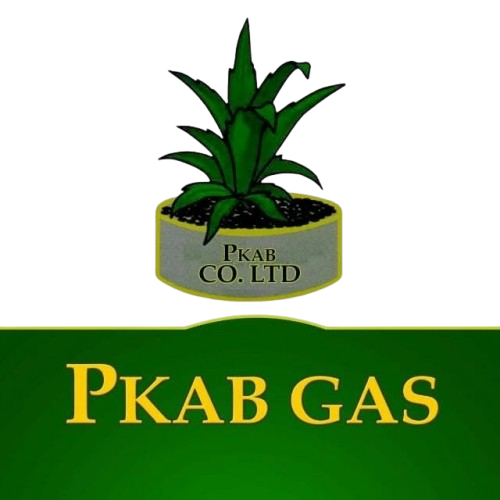

1. Site Name
PKAB Gas (PKAB CO. LTD)
Why this name was chosen: This name directly represents PKAB CO. LTD's commercial LPG retail and energy dispensing brand. It is concise, recognizable, and immediately communicates reliability to customers seeking domestic cylinder refilling, commercial supply, and specialized auto-gas refueling for vehicles.

2. Site Purpose
The primary purpose of the PKAB Gas website is to provide an accessible, informative digital hub for the company's multi-service refilling operations. The site connects customers with operational station branches, clearly identifies stations offering dedicated vehicle auto-gas pumps, provides a real-time cylinder and fuel refill cost calculator, provides critical LPG leak safety and handling instructions, and offers an inquiry form for commercial cylinder supplies.
3. Scenarios
- Where is the nearest PKAB Gas branch on my travel route, and does that specific station feature dedicated auto-gas dispensing pumps for vehicles?
- How much will it cost to fuel my LPG-converted taxi or vehicle based on current auto-gas pump rates per liter?
- What safety protocols and vehicle checks are required before and during an auto-gas refill at the pump station?
- How much will it cost to refill my 6kg or 14.5kg domestic cooking cylinder at today's official pump rate?
- How can commercial catering kitchens and bulk users arrange direct cylinder supply or routine safety valve inspections?
4. Color Schema
The color palette is derived directly from the official PKAB CO. LTD logo:
Used for the site header background, primary page headings (H1, H2), and footer background.
Used for call-to-action buttons, active navigation indicators, and visual accents.
Used for readable body text paragraphs, form inputs, and high-contrast borders.
5. Typography
Two Google Web Fonts have been selected to balance clean readability with authoritative industrial branding:
Heading Font: Montserrat
PKAB Gas — Reliable Domestic, Commercial & Autogas Refilling
Where it will be used: All main headings (<h1>, <h2>, <h3>), hero banners, primary navigation links, and call-to-action buttons.
Body Font: Open Sans
Liquefied Petroleum Gas (LPG) provides a reliable, cleaner-burning fuel solution for cooking, commercial operations, and vehicles. PKAB Gas ensures safety inspections for all cylinders and vehicle fuel connections prior to dispensing.
Where it will be used: All body copy, paragraph descriptions, station address listings, cost calculator forms, safety guides, and footer text.
6. Wireframes
The following wireframe diagrams illustrate the structural content layout for the home page
(index.html) in both mobile view and wide desktop view.
Mobile Home Page Wireframe (< 640px)
Single-column flow featuring a compact sticky header, hamburger toggle menu, hero banner, refilling service cards stacked vertically, interactive branch locator grid, and safety quick-links.
Desktop Home Page Wireframe (≥ 640px)
Wide multi-column layout featuring an expanded horizontal navigation bar, two-column hero with refill calculator teaser, 3-column service grid, and responsive multi-column branch card grid.